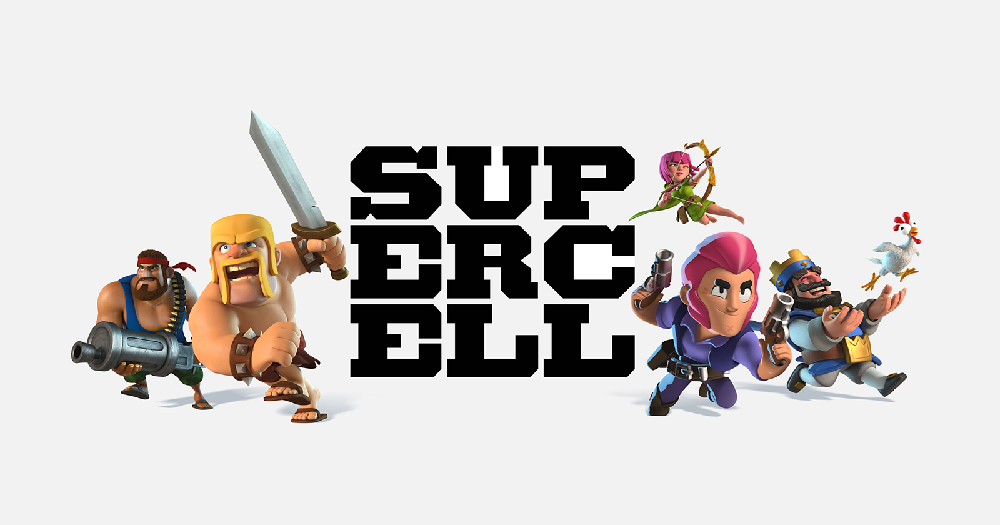

¿Quien creo Clash Royale?
La empresa que creo clash royale es Supercell. Supercell es una empresa finlandesa de desarrollo de videojuegos para móviles la cual cuenta con sedes en Helsinki, Tokio, San Francisco, Seúl y Shanghái. La compañía fue fundada en mayo de 2010 en Helsinki, Finlandia. Ilkka Paananen es CEO de la compañía y actualmente cuenta con un aproximado de 320 empleados. El juego de debut de la compañía fue Gunshine.net el cual actualmente está cerrado desde 2012, al tratar de ingresar a la página aparecerá un mensaje del cierre y agradecimientos. En 2011, comenzó a desarrollar juegos para dispositivos móviles. En 2016 registró ingresos estimados en 2,5 millones de dólares al día. 
Otras entregas famosas
Clash of Clans, también conocido como CoC , es un videojuego de estrategia y de construcción de aldeas en línea, para dispositivos móviles con plataformas de iOS y Android. Fue desarrollado por Supercell y lanzado para dispositivos iOS el 2 de agosto del 2012, y el 8 de octubre para dispositivos Android. Requiere acceso a Internet para utilizarlo. En este mismo juego se basó Clash Royale.
Brawl Stars es un videojuego multijugador para móviles disponible en Android y iOS, desarrollado por Supercell y lanzado globalmente en 2018.1 La versión beta del juego fue lanzada el 14 de junio de 2017 solo para Canadá, Australia y Nueva Zelanda con temáticas simples y mecánicas difíciles, mientras que la versión global se lanzó agregando un apartado visual con mayor detalles interesantes y diferentes funcionalidades, que se agregaron el 12 de diciembre de 2018. Actualmente lleva 5 años de existencia en el mundo de los videojuegos móviles.